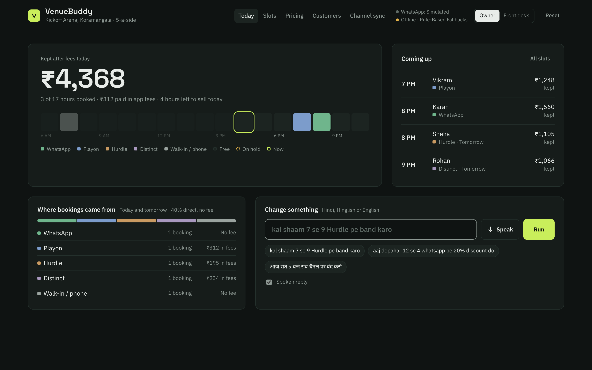

⚽ VenueBuddy
Omnichannel slot fulfilment and AI pricing for Indian sports venues · Requirements & understanding document · Hackathon build v1.0
Date: 22 Nov 2026Status: Working demo built, requirements frozenAI partner: Sarvam AI (LLM · STT · TTS)
One line: a venue owner should run every booking channel from one inventory, price each channel on purpose, and give instructions in the language they think in.
1. Problem statement
Independent sports venues in India (football turfs, box cricket, badminton, pickleball) sell the same perishable one-hour slot on 4–6 channels at once: aggregator apps, WhatsApp, phone calls and walk-ins. Inventory is synced by hand, through a register or a WhatsApp group.
| Pain | Consequence for the venue |
|---|
| No single source of truth for inventory | Double bookings, refunds, angry regulars |
| Flat pricing, no per-channel strategy | Empty off-peak slots; under-priced peak slots |
| Aggregators take about 10–20% commission (assumption) | Commission leaks even on repeat customers the venue already won |
| The aggregator owns the player relationship | The venue can't re-market, so customer acquisition stays rented |
| Most aggregators have no public partner API | Integration has to be manual or semi-automated today |
| Owners are Hindi/Hinglish-first and mobile-first | English, dashboard-heavy software doesn't get adopted |
2. Personas & jobs-to-be-done
| Persona | Job-to-be-done | What the demo proves |
|---|
Venue owner
Owns one turf in Bengaluru, Hinglish-first, on his phone all day | "When a slot is going empty or a channel is eating my margin, I want to fix it in one sentence without learning software." | Hindi command console, AI Optimise, net-to-venue counters |
Front-desk staff
Handles walk-ins and phone calls | "When someone walks in, I want to book in one tap and know it can't clash with an app booking." | Booking on any channel locks the slot everywhere |
Player
Plays 5-a-side every week | "I want a confirmed slot at a fair price, and a cheaper option if I book direct." | Direct price ≤ aggregator price (Phase 2 turns players into direct customers) |
3. Solution & scope
Pillar 1: Omnichannel fulfilment (the "API router")
One slot ledger is the source of truth. A booking on any channel closes the slot on all the others, and the sync calls appear in a live log. A second booking attempt on a sold slot is rejected with a 409 CONFLICT.
Pillar 2: AI pricing per channel
A rule engine sets the baseline price. Sarvam AI then moves prices per slot × channel to maximise net-to-venue, with a one-line reason for every move and hard guardrails.
Pillar 3: Vernacular owner console
The owner types or speaks in Hindi, Hinglish or English. Sarvam turns the command into structured actions, which are applied across channels, and a Hindi confirmation is spoken back.
Stage safety
Every AI path has a deterministic offline fallback. The Sarvam key stays on the server. There's an offline toggle (O), a reset (R) and a hands-free #autoplay backup.
Locked demo decisions
| Decision | Value |
|---|
| Venue | One 5-a-side turf, Bengaluru · base ₹1,000/hr · 17 one-hour slots a day (start hours 06–22, last slot 22:00–23:00) · Today and Tomorrow |
| Channels | direct Direct/WhatsApp 0% · aggA Aggregator A 20% · aggB Aggregator B 15% · walkin Walk-in 0%. These are generic mock channels, not real integrations. |
| Build | A single index.html (vanilla JS, in-memory state) plus a zero-dependency Node proxy (server.js) that holds the key and serves the page from the same origin, so there's no CORS issue |
| Day type | Taken from the real calendar. On demo day, today is Sunday, so the weekend multiplier shows, and tomorrow is Monday, a weekday. |
4. Pricing model
| Band | Start hours | Multiplier |
|---|
| Peak | 06, 07, 18, 19, 20, 21 | × 1.3 |
| Shoulder | 08, 09, 16, 17, 22 | × 1.0 |
| Off-peak | 10 – 15 | × 0.8 |
| Weekend (day multiplier) | Sat / Sun | × 1.2 |
rule = BASE × band × day
listed = (owner price override OR AI price OR rule) × (1 − owner discount %)
listed = clamp(round₹10(listed), floor_listed(channel), ₹1,800)
net = listed × (1 − commission)
floor_listed(channel) = ₹600 ÷ (1 − commission) → Direct/Walk-in ₹600 · Agg B ₹710 · Agg A ₹750
AI moves are bounded to ±30% of the rule price. Booked slots are frozen at their booking price.
By default every channel shows the same listed price, so the differences in net make commission leakage visible straight away. For example, a weekday peak slot lists at ₹1,300: the venue nets ₹1,300 on Direct but only ₹1,040 on Aggregator A.
5. Functional requirements & build status
BUILT working in the demo · PARTIAL simplified for the demo · DEFERRED on the roadmap
| ID | M | Requirement · acceptance criteria | Status |
|---|
| FR-1 | M1 | Grid of 17 slots × 4 channels per day, with Today and Tomorrow tabs and band labels | BUILT |
| FR-2 | M1 | Each cell shows the listed price and the net-to-venue price (net = listed × (1 − c)) | BUILT |
| FR-3 | M1 | Booking from any channel cell marks the slot booked; all 4 cells lock and show the source channel; sync calls to the other 3 channels are logged | BUILT |
| FR-4 | M1 | Booking a slot that is already sold or closed is rejected (409), the cell flashes, and the "Double bookings blocked" counter goes up | BUILT |
| FR-5 | M1 | Cancelling a booking reopens the slot on every channel and logs the reopen sync | BUILT |
| FR-6 | M1 | Deterministic seed bookings: Today 07 Walk-in, Today 19 Agg A, Today 20 Direct, Tomorrow 20 Agg B. Tomorrow 19 stays open for the demo command. Reset (button or R) restores the seed. | BUILT |
| FR-7 | M2 | The §4 formula is applied to every open cell, with the net floor and ceiling enforced | BUILT |
| FR-9 | M2 | Live counters: bookings, occupancy, net revenue, commission paid, commission saved, double bookings blocked, AI slots filled | BUILT |
| FR-10 | M3 | "AI Optimise" sends a snapshot of the inventory (free slots and per-channel prices; booked slots shown only as status) to Sarvam through the proxy | BUILT |
| FR-11/12 | M3 | The LLM returns JSON in the Optimise schema. Each change is validated: the cell must exist, be free and be open; the price is bounded to ±30% of the rule price and clamped to the floor and ceiling; at most 10 changes; invalid entries are dropped and counted. | BUILT |
| FR-13 | M3 | Changed cells get a ✨ highlight and a reason on hover; a panel lists ₹old → ₹new with reasons and a source badge reading Sarvam AI or Fallback rules | BUILT |
| FR-14 | M3 | Deterministic fallback optimiser: off-peak Direct −20%, Agg B −10%; peak Agg A +15% | BUILT |
| FR-16/17 | M4 | The command box takes Devanagari, Hinglish or English and submits on Enter. Sarvam parses the text into the Action schema. | BUILT |
| FR-18 | M4 | Guardrails are checked per action; invalid actions are rejected with a reason in the log, and the valid ones still apply | BUILT |
| FR-19 | M4 | Preview card with Apply/Cancel before committing. The demo applies immediately and shows the parsed actions plus the reply. | PARTIAL |
| FR-20 | M4 | Hindi confirmation: reply_hi from the LLM, or a templated Hindi reply from the fallback | BUILT |
| FR-21 | M4 | Offline keyword parser. It passes all 8 test commands, including "kal shaam 7 baje Aggregator B band karo", "aaj 3 se 5 direct pe 20% discount do", "आज रात 9 बजे सब चैनल पर बंद करो" and "kal subah 6 baje walk-in book karo". | BUILT |
| FR-22 | S | Mic → Sarvam STT → transcript in the box → command runs. Browser recordings are webm, which still needs checking against the Sarvam key. | PARTIAL |
| FR-23 | S | Speak reply_hi with Sarvam TTS, falling back to the browser's speechSynthesis (hi-IN) | BUILT |
| — | — | Fixed demo clock and greyed-out past slots; a "Clear AI" button (Reset covers this for now) | DEFERRED |
Action schema (owner commands)
{ "actions": [ { "type": "block | unblock | book | set_discount | set_price | clear",
"day": "today | tomorrow", "start_hour": 19, "end_hour": 20, // 24h, end exclusive
"channels": ["direct" | "aggA" | "aggB" | "walkin" | "all"],
"value": null } ], // % for discount, ₹ for price
"reply_hi": "ठीक है, कल 19 से 20 बजे तक के स्लॉट बंद कर दिए…" }
Language rules: "kal" always means tomorrow. "subah" means AM. "dopahar" means 12–16. "shaam" and "raat" mean PM. A bare hour from 1 to 11 defaults to PM unless a word like subah, morning or am says otherwise. "sab" or "all" means every channel.
Optimise schema (AI pricing)
{ "changes": [ { "day": "tomorrow", "hour": 14, "channel": "direct", "new_price": 770,
"reason": "Off-peak slot: 20% off on direct to fill with zero commission" } ],
"summary": "Discounted off-peak direct, premium on high-commission channels at peak" }
Guardrails
| ID | Rule | Behaviour |
|---|
| GR-1 | Never reprice a booked slot | Skipped; booked price is frozen |
| GR-2 | Net floor ₹600 and listed ceiling ₹1,800 | An owner set_price outside the bounds is rejected; an AI move or discount is clamped |
| GR-3 | AI moves bounded to ±30% of the rule price | Clamped |
| GR-4 | Schema violation (unknown type or channel, bad hours) | That action is dropped; the rest still apply |
| GR-5 | LLM output can't be parsed, or takes longer than 8 s | The offline parser or optimiser runs automatically, and the source badge says so |
6. Non-functional requirements
| Area | Requirement |
|---|
| Key security | SARVAM_API_KEY exists only in the proxy's environment. It never appears in the HTML, the JS or any response. |
| Latency | Local actions take under 100 ms. LLM calls have a hard 8 s timeout, after which the fallback runs. |
| Robust parsing | Strip any <think> block and code fences, take the outermost {…}, then validate it against the schema |
| Stage safety | No CDN or external assets; deterministic seed data; O toggles offline mode, R resets; /#autoplay runs the whole story hands-free |
| Honesty | A source badge on every AI result (Sarvam AI vs fallback); commission rates are labelled as assumptions |
7. Demo metrics
| Metric | Computation |
|---|
| Occupancy | Booked slots ÷ 34 (17 slots × 2 days) |
| Net revenue to venue | Σ booking price × (1 − commission) |
| Commission paid | Σ booking price × commission, over aggregator bookings |
| Commission saved | Σ booking price × 15% over Direct and Walk-in bookings. This is the conservative counterfactual: the cheapest aggregator's rate. |
| Double bookings blocked | Count of 409 rejections |
| AI slots filled | Bookings landing on slots that the AI had repriced |
8. The working demo

After #autoplay in offline mode: a walk-in booking locks 6 PM on every channel and a racing Aggregator A request is blocked; the fallback optimiser repriced 10 cells with reasons; two Hinglish commands closed tomorrow 7 PM on Aggregator B and put 20% off Direct from 3 to 5 PM, with the Hindi confirmation shown.
Run it
cd ~/venue-omni
SARVAM_API_KEY=xxxx node server.js # open http://localhost:3000 (without a key it uses the offline fallbacks)
# optional overrides: SARVAM_CHAT_MODEL, SARVAM_STT_MODEL, SARVAM_TTS_MODEL, SARVAM_TTS_SPEAKER
9. 90-second demo script
| Time | On screen | Line |
|---|
| 0–10s | The grid is loaded | "This turf sells the same 7 PM slot on four channels, by hand. That's where double bookings and 20% commissions come from." |
| 10–25s | Book Today 6 PM on Walk-in: all 4 cells lock. Then click Aggregator A on the same slot: 409, and the counter goes up. | "One inventory. Book anywhere and it's locked everywhere." |
| 25–35s | Point at the net row: Agg A nets ₹1,040 against Direct's ₹1,300 | "Same price, but the venue keeps ₹260 less. Now you can see it." |
| 35–55s | Click ✨ AI Optimise and hover a reason | "Sarvam prices every slot per channel: fill the afternoons on direct, and protect margin where commission is high." |
| 55–80s | "kal shaam 7 baje Aggregator B band karo" → the cell closes and the confirmation is spoken in Hindi | "The owner doesn't learn software. He talks in Hinglish." |
| 80–90s | The counter strip | "Phase 1: control the inventory. Next: own the customer on WhatsApp and UPI." |
10. Risks, assumptions & out of scope
| Risk | Mitigation |
|---|
Sarvam is slow or down, or returns malformed or <think> output | 8 s timeout, robust parsing, offline fallbacks, offline toggle |
| The LLM reads "7 baje" as AM | Explicit time rules in the prompt; the parsed time is shown in the reply and the log |
| A judge asks "how do you actually sync with the aggregators?" | Be honest: there are no public APIs. Phase 1 is the source of truth plus manual or partner-dashboard sync; partner integrations come in Phase 3. |
| Aggregators enforce rate parity | Per-channel pricing is configurable; "direct is cheaper" can become "direct gets perks" in Phase 2 |
| Sarvam STT rejects webm audio | The mic is a stretch goal; typing is always the primary path |
Assumptions: the 20% and 15% commission rates are illustrative. Base price, bands, floor and ceiling are demo values that a venue would configure. Each slot is one hour on one court with one booking.
Out of scope for the demo: WhatsApp bot · UPI and split-pay · team formation · real aggregator integrations or scraping · login · database (state resets on reload) · multiple venues or courts · payments and refunds.
11. What judges should take away
- The real problem is inventory and margin control, not discovery. Venues lose money to double bookings, empty off-peak slots and commission on customers they already own.
- One inventory, every channel, with net-to-venue visible everywhere. That makes commission leakage concrete.
- AI in the owner's language. Sarvam powers Hinglish commands and per-channel pricing, with a reason for every change and guardrails that keep it safe.
- Built to survive the stage: deterministic fallbacks everywhere, and the key stays on the server.
12. Roadmap
| Phase | Theme | Scope |
|---|
| 1 · Now (pilot) | Control | Single-venue inventory, channel routing, rule-based and AI pricing, Hindi command console |
| 2 · ~3 months | Own the customer | WhatsApp booking bot with UPI · QR codes at the venue that turn aggregator players into direct customers · win-back campaigns for lapsed regulars |
| 3 · ~6 months | Network | Split-pay and team formation · a last-minute deals feed · partner integrations with aggregators · multi-venue chains |
| 4 · Moat | Autopilot | Demand forecasting (weather, events, history) driving pricing automatically, inside owner-set guardrails |